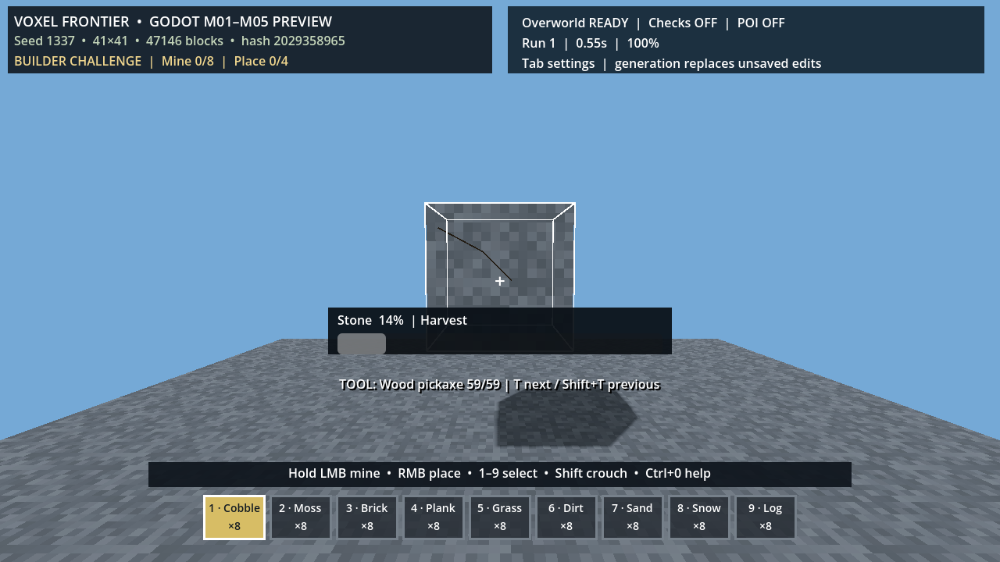

범위와 증거
- LMB 취소, 도구 등급·내구도, 물리 드롭·지연 줍기
- 24가지 설치 방향, 통나무 회전, 이웃 갱신·저장 복원, 10단계 균열
- 채굴 294/360, 방향 878/900, 물리 아이템 10,000개, OS 재시작 복원
게임 플레이 증거

조준 윤곽·채굴 진행·선택 도구·핫바가 동시에 보이는 실제 렌더 캡처.
제한
2,048 드롭 검사는 장시간 FPS 보장이 아니며 초기 도구 9개는 프리뷰로 남아 있습니다.
도구·내구도·시간 기반 채굴·물리 드롭·면 기반 설치를 하나의 보존되는 플레이 루프로 묶는 단계.

조준 윤곽·채굴 진행·선택 도구·핫바가 동시에 보이는 실제 렌더 캡처.
2,048 드롭 검사는 장시간 FPS 보장이 아니며 초기 도구 9개는 프리뷰로 남아 있습니다.